Free
- O player de música completo
- Mais de 60 estilos, o primeiro de cada família
- Os botões rápidos e os controles básicos no Customize
- Vídeo em até 1080p a 30 fps, um minuto, com marca d'água
- Modo Auto no primeiro minuto de cada música

Um player de música com visuais 3D que reagem às suas músicas. Exporte tudo como vídeo.
334 estilos vivos que ouvem a própria música: cada nota de baixo, batida de bateria, acorde e drop. Deixe cada um com a sua cara e renderize como vídeo em até 4K. Offline, sem conta, sem anúncios e sem rastreamento.
334 styles · 19 families
Cenas 3D para sobrevoar, fractais, nebulosas, terrenos, vidro, fluidos e partículas. Todas se movem com o que você toca. Estas são capturas de tela reais de um celular.
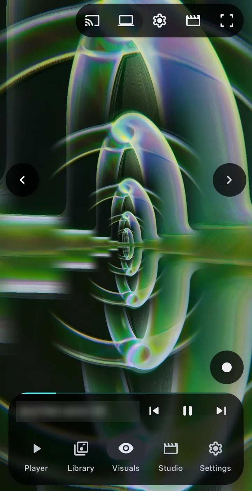
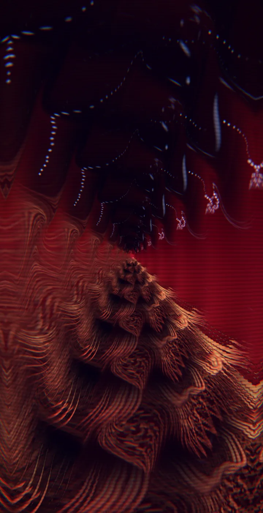
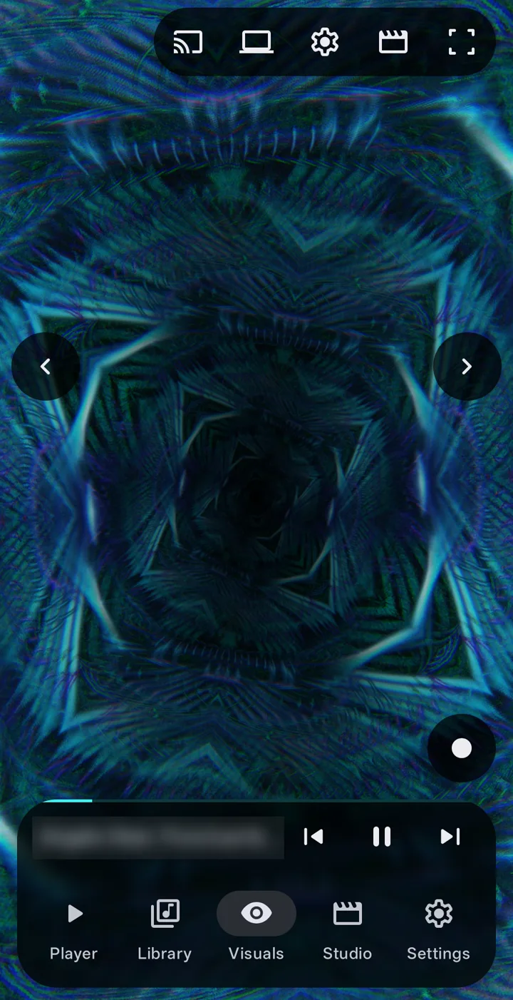
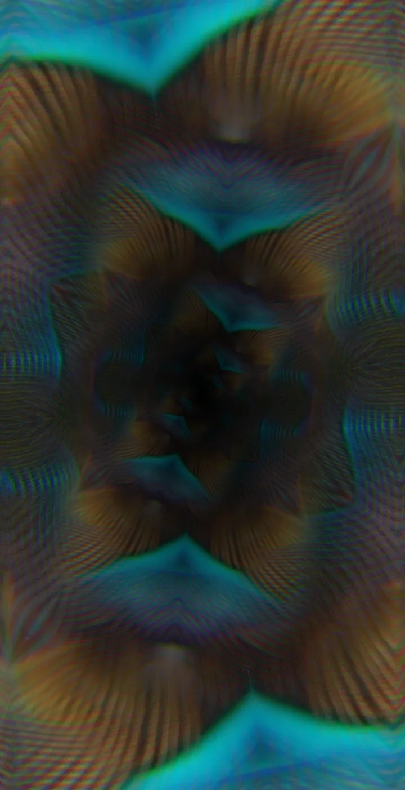
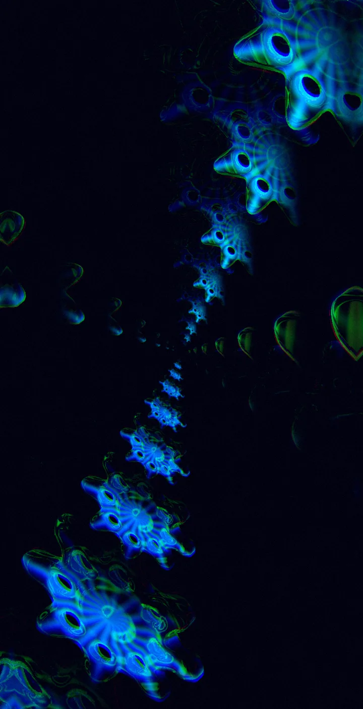
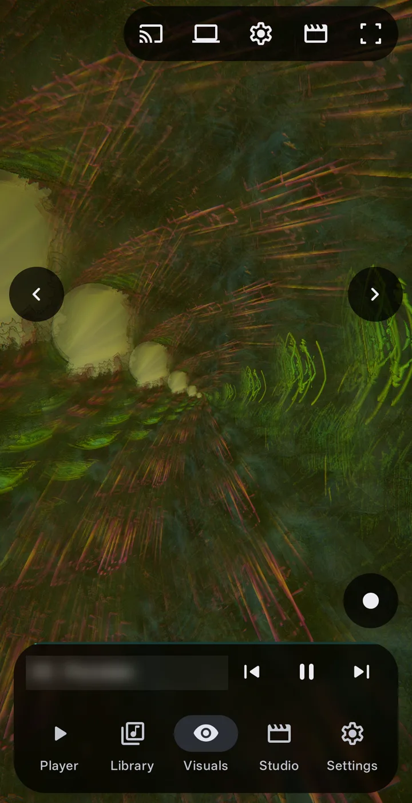
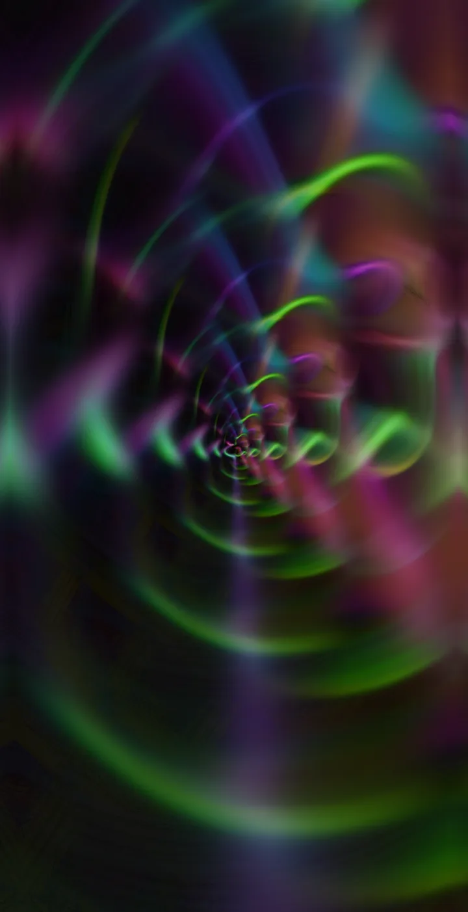
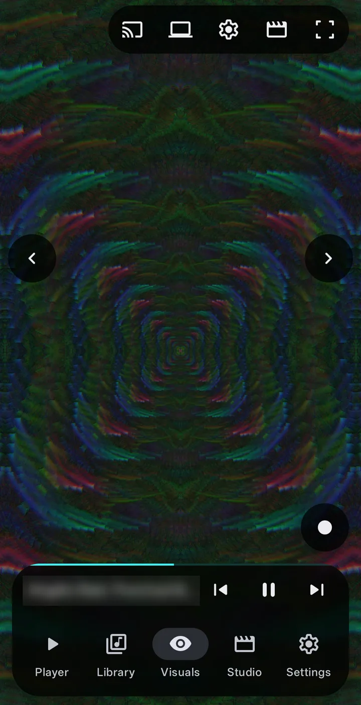
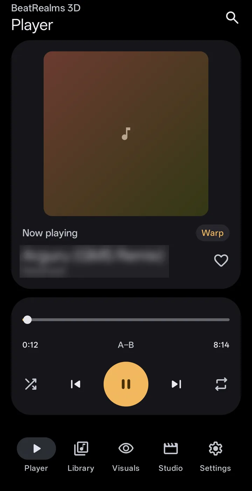
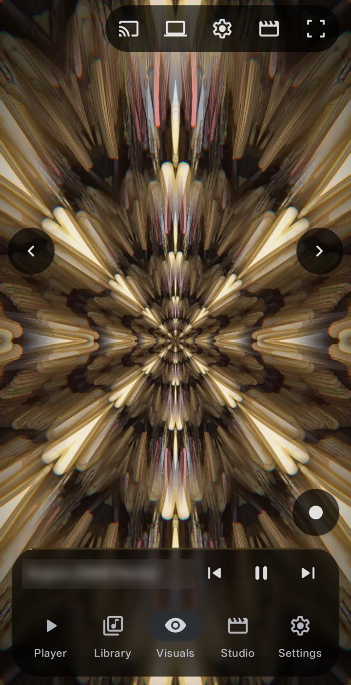
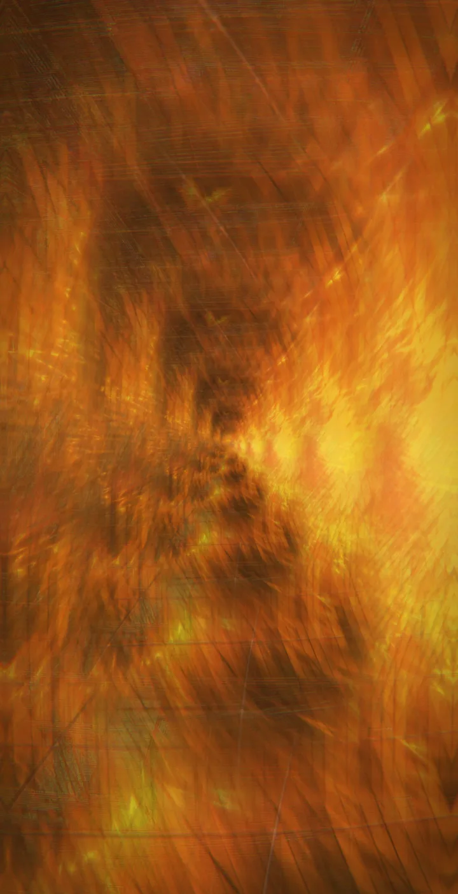
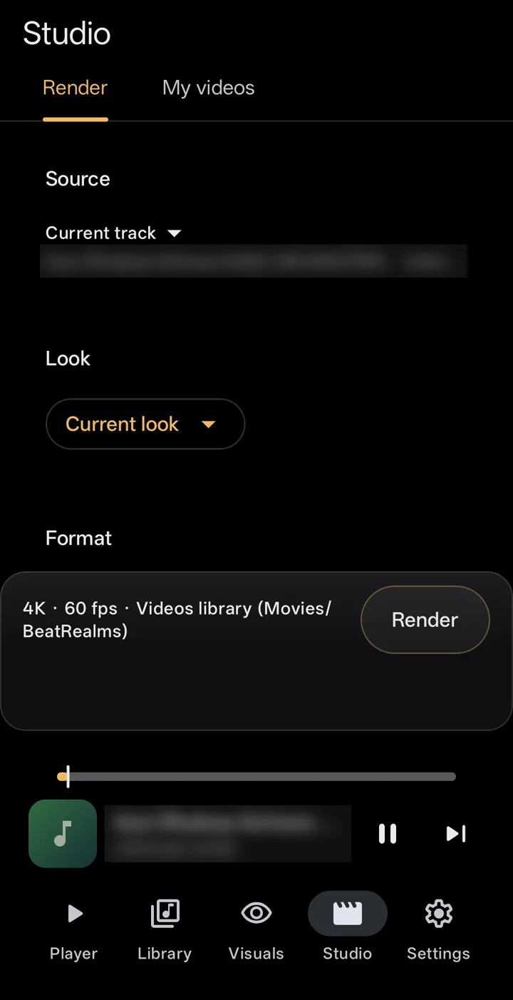
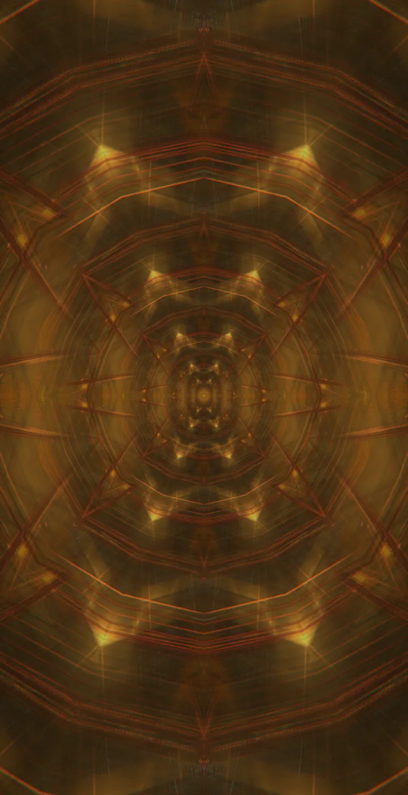
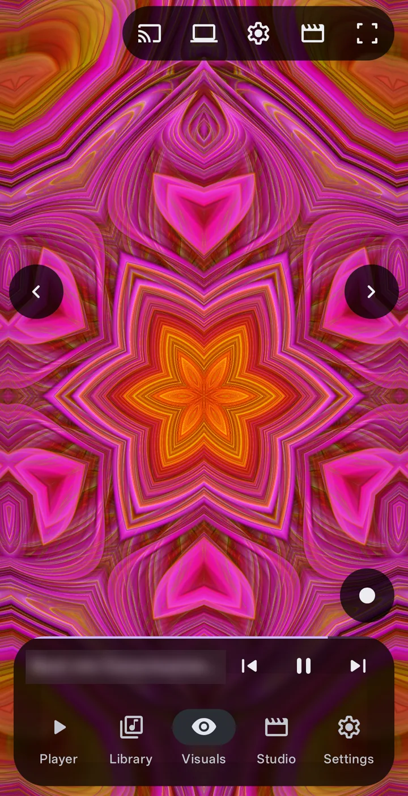
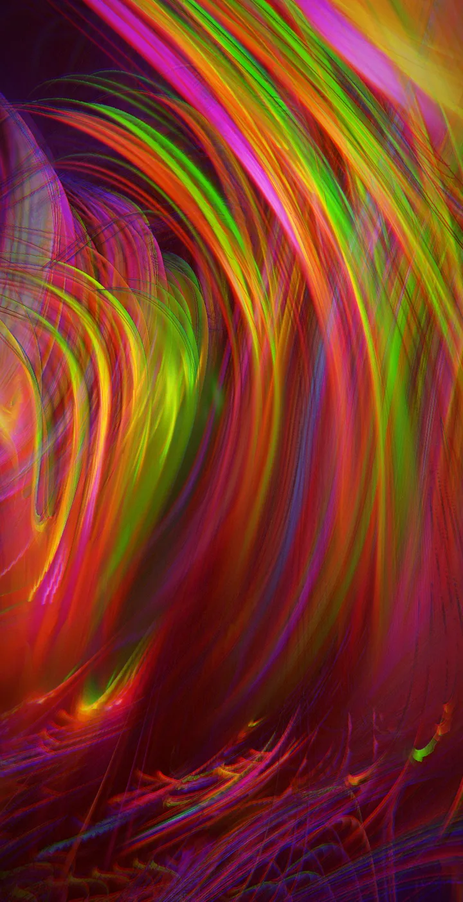
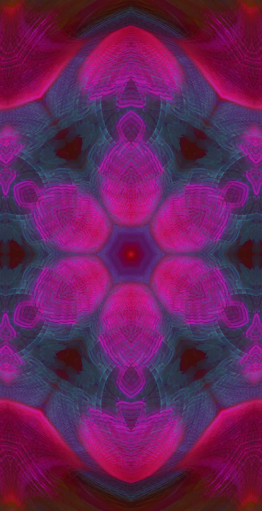
What it does
Um player de música completo, um visualizador que escuta e um estúdio que renderiza, em um só app. Veja o resumo completo de todos os recursos.
Álbuns, artistas, pastas e playlists, com loop A–B, crossfade, timer de suspensão, equalizador e letras sincronizadas.
The player334 estilos que ouvem o baixo, a bateria, as notas, o tom e os drops, e o modo Auto para dirigi-los por você.
The visualsRenderize qualquer música em MP4 em até 4K a 60 fps, com formatos de um toque para YouTube, Shorts e TikTok.
The studioUm papel de parede animado e um protetor de tela, Cast para a sua TV, ou mostre em um computador ou em uma segunda tela.
Beyond the phoneQuick knobs
Gire um botão e o visual inteiro acompanha. Com o Pro, crie seus próprios botões.
Customize
Comece com um único botão ou vá fundo em onze grupos. Tudo o que você muda pode ser salvo, compartilhado e recuperado.
Why BeatRealms
Free and Pro
Nenhum dos dois tem anúncios. O Pro é uma única compra no app, não uma assinatura, e você pode testá-lo por uma hora antes.
Privacy
Sem conta, sem anúncios, sem análises. Suas músicas, seu histórico, suas configurações e seus vídeos ficam no seu celular. A internet é usada apenas para o Cast na TV e para mostrar o visual em um computador, pela sua própria rede Wi-Fi. Este site não define cookies e não carrega nada de nenhum outro lugar.
Os visuais são brilhantes, rápidos e em tela cheia, e podem piscar. Um pequeno número de pessoas pode ter uma convulsão ao ver luzes ou padrões piscando, mesmo sem histórico de epilepsia. O app limita o quanto e a que velocidade os próprios efeitos mudam o brilho e segue a configuração "Remover animações" do Android, mas não consegue tornar os visuais seguros para todos. Se você ou qualquer pessoa assistindo for sensível a luzes piscando, não use os visuais e pare imediatamente se não se sentir bem.